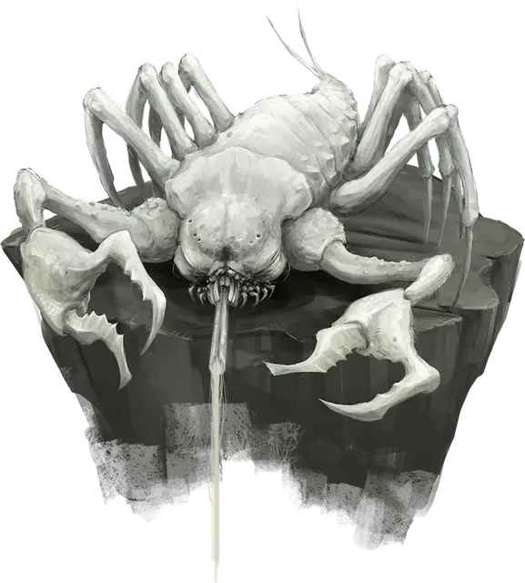

Пещерный удильщик
Cave Fisher
Средний Монстр, без мировоззрения

Класс Доспеха 16 (природный доспех)
Хиты 58 (9к8 + 18)
Скорость 20 футов, лазая 20 футов
| мод | спас | ||
|---|---|---|---|
| СИЛ | 16 | +3 | +3 |
| ЛОВ | 13 | +1 | +1 |
| ТЕЛ | 14 | +2 | +2 |
| мод | спас | ||
|---|---|---|---|
| ИНТ | 3 | −4 | −4 |
| МДР | 10 | +0 | +0 |
| ХАР | 3 | −4 | −4 |
Навыки Восприятие +2, Скрытность +5
Чувства слепое зрение 60 футов, пассивное Восприятие 12
Опасность 3 (700 опыта)
Бонус мастерства +2
Среда обитания Подземье
Особенности
Огнеопасная кровь. Если хиты пещерного удильщика падают до половины или ниже, то он получает уязвимость к урону огнём.
Паучье лазанье. Пещерный удильщик может лазать по сложным поверхностям, включая потолки, без совершения проверок характеристик
Действия
Мультиатака. Пещерный удильщик совершает две атаки Когтями.
Когти. . Рукопашная атака оружием: +5 к попаданию, досягаемость 5 футов, одна цель. Попадание: 10 (2к6 + 3) рубящего урона.
Нить. Одно существо большого размера или меньше, схваченное клейкой нитью пещерного удильщика, должно совершить спасбросок Силы Сл 13. При провале цель подтягивается на незанятое место в 5 футах от пещерного удильщика и он совершает по ней атаку Когтями. Подтягивание цели освобождает всех остальных, кто был приклеен к нити. До окончания захвата пещерный удильщик не может использовать Клейкую нить.
Бонусные действия
Клейкая нить. Пещерный удильщик выпускает клейкую нить длиной до 60 футов и она прилипает ко всему, чего коснется. Существо, прилипшее к нити, становится схвачено пещерным удильщиком (Сл высвобождения 13), а проверки характеристик для высвобождения от этого захвата совершаются с помехой. Нить можно атаковать (КД 15; 5 хитов; иммунитет к урону психической энергией и яду). Оружие, которое не смогло её разорвать, прилипает к нити, и чтобы оторвать его необходимо потратить действие и успешно совершить проверку Силы Сл 13. Уничтожение нити не наносит урона пещерному удильщику. Клейкая нить распадается, если пещерный удильщик повторно использует это бонусное действие.
Описание
Пещерный удильщик – это подземный арахнид с длинным рыльцем с прядильными органами, которыми существо может производить липкое волокно, похожее на нити паутины пауков, и существо использует его, чтобы ловить жертв.
Пещерный удильщик обычно охотится на маленьких животных и любит летучих мышей, так что он растягивает свое волокно над проходами, через который такая добыча может перемещаться. Потом он забирается в потайное место, прикрепляется к поверхности, чтобы отдохнуть, и ждёт. Когда добыча впутывается в волокна, пещерный удильщик притягивает свою пищу. Группа пещерных удильщиков может работать сообща и покрыть волокном большую площадь, но как только один ловит потенциальную еду, каждый пещерный удильщик в области соревнуется за приз. Если жертва избегает начальную засаду, пещерный удильщик может вернуть себе добычу, выстрелив волокном в попытке снова её поймать.
Дефицит пищи может выманить группу пещерных удильщиков на поверхность, в тенистый каньон или мрачный лес, в которых можно встретить и местных животных и существ, таких как исследователей или путешественников, которые иногда проходят в такой области.
Ценнейшие части
Почти каждая часть пещерного удильщика полезна после разделки существа. Его кровь содержит алкоголь и по вкусу похожа на крепкий ликер. Некоторые дварфийские спиртные напитки содержат кровь пещерного удильщика в рецепте, а некоторые дварфы, особенно алкоголики–смертники, пьют кровь напрямую. Волокна пещерного удильщика, если собрать их после сплетения, можно связать в тонкую, прочную и почти невидимую веревку. Мясо пещерного удильщика съедобно, и на вкус очень похоже на краба, приготовленного в крепком вине. Панцирь существа используется в производстве инструментов, доспехов и ювелирных украшений.
Некоторые охотятся на пещерных удильщиков и убивают их ради волокон и крови, а другие воруют яйца удильщика и выращивают потомство. У пещерных удильщиков естественная нелюбовь к огню, так как их кровь огнеопасна. Из–за этого хитины и хобгоблины иногда используют угрозы огнём для тренировки пещерных удильщиков, которых используют для охраны проходов или в качестве военных зверей.